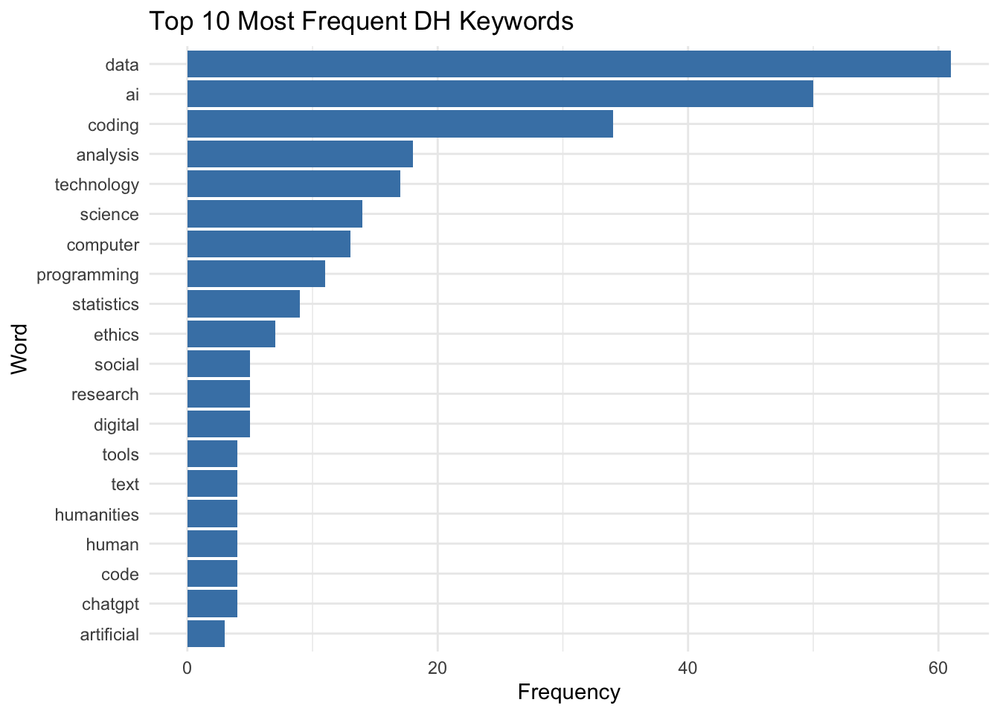

if (!require("pacman")) install.packages("pacman")Loading required package: pacmanWelcome to the world of quantitative text analysis! In this chapter, we’ll explore the fundamental concepts and techniques used to prepare text data for analysis. We’ll use a collection of classic novels as our dataset to demonstrate these concepts.
Quantitative text analysis (QTA) is a method of analyzing large volumes of text data using computational techniques. It allows researchers to extract meaningful patterns, themes, and insights from textual data that would be difficult or impossible to analyze manually.
In Digital Humanities, QTA offers powerful tools for exploring large text corpora:
Scale: Analyze vast collections of texts, revealing patterns across time periods, genres, or authors.
Distant Reading: Observe broader patterns in literature and cultural production.
Hypothesis Testing: Empirically test literary and cultural theories across large datasets.
Discovery: Reveal unexpected patterns or connections, sparking new research questions.
Interdisciplinary: Combine methods from linguistics, computer science, and statistics with humanistic inquiry.
Visualization: Present textual data in new, visually interpretable ways.
QTA complements traditional close reading, offering Digital Humanities scholars new perspectives on cultural, historical, and literary phenomena.

The Quantitative Text Analysis (QTA) workflow illustrates the systematic process of analyzing textual data using computational methods. This workflow can be divided into five main stages:
Data Acquisition:
Text Preprocessing and Standardization:
Text Representation:
Data Analysis and Modeling:
Visualization & Reporting:
This workflow emphasizes the importance of a structured approach to text analysis, from raw data to final insights. Each stage builds upon the previous one, with the flexibility to iterate or adjust methods based on the specific requirements of the analysis and research questions. The process can be iterative, with researchers often moving back and forth between stages as needed to refine their analysis and results.
pacman
We will be using some new packages that you probably haven’t installed. To streamline the process of package installation, let’s introduce a helpful tool for managing R packages: pacman. The pacman package is a convenient package management tool for R that simplifies the process of loading and installing multiple packages.
Key features of pacman:
install.packages() and library() into a single function p_load().Let’s install pacman:
if (!require("pacman")) install.packages("pacman")Loading required package: pacmanOnce we load the pacman library, we can use p_load() to efficiently load (and install if necessary) the packages we’ll need:
This single line will ensure all the packages we need are installed and loaded, streamlining our setup process.
Text preprocessing is the crucial first step in quantitative text analysis. It involves cleaning and standardizing raw text data to make it suitable for computational analysis.
Why is it important?
Fundamental considerations:
Remember, there’s no one-size-fits-all approach to preprocessing. The techniques you apply should be carefully considered based on your specific research context.
To showcase the various techniques for text preprocessing, let’s first create a mock dataset:
mock_data <- tibble(
text = c(
"The Quick Brown Fox Jumps Over the Lazy Dog! Data Science meets Cultural Studies.",
"Digital Humanities 101: An Introduction (2024); Exploring Big Data in Literature & History",
"R Programming for Text Analysis - Chapter 3. Machine Learning for Textual Analysis",
"NLP techniques & their applications in DH research; Computational Methods in Humanities Research?",
"20+ ways to visualize data üìä: graphs, charts, and more! Digital Archives and Text Mining Techniques."
)
)Let’s take a closer look at our mock dataset:
print(mock_data)# A tibble: 5 × 1
text
<chr>
1 The Quick Brown Fox Jumps Over the Lazy Dog! Data Science meets Cultural Stud…
2 Digital Humanities 101: An Introduction (2024); Exploring Big Data in Literat…
3 R Programming for Text Analysis - Chapter 3. Machine Learning for Textual Ana…
4 NLP techniques & their applications in DH research; Computational Methods in …
5 20+ ways to visualize data üìä: graphs, charts, and more! Digital Archives and‚ĶExamine the mock dataset above and reflect on the following questions:
What characteristics or elements do you notice that might need preprocessing for effective text analysis?
What challenges might these elements pose for text analysis? How might preprocessing help address these challenges?
Capitalization: Words are inconsistently capitalized (e.g., “The Quick Brown Fox” vs. “Data Science”). This could lead to treating identical words as different entities.
Punctuation: Various punctuation marks are present, including periods, exclamation marks, colons, and semicolons. These might interfere with word tokenization and analysis.
Numbers: Some entries contain numbers (e.g., “101”, “2024”, “3”, “20+”). Depending on the analysis goals, these might need to be removed or treated specially.
Special Characters: There are ampersands (&) and hyphens (-) which might need special handling.
Sentence Structure: Each row contains multiple sentences. For sentence-level analysis, we might need to split these.
Abbreviations: “NLP” and “DH” are present. We might need to decide whether to expand these or treat them as single tokens.
Stop Words: Common words like “the”, “and”, “for” are present. These might not contribute much meaning to the analysis.
These observations highlight the need for various preprocessing steps, including: - Converting text to lowercase for consistency - Removing or standardizing punctuation - Handling numbers and special characters - Sentence or word tokenization - Removing stop words
By addressing these elements through preprocessing, we can prepare our text data for more effective and accurate analysis.Before we dive into analyzing our mock data, let’s explore a powerful tool in text analysis: Regular Expressions.
Have you ever wondered how computer programs like Excel or Word can find the exact word or phrase you’re searching for? Or how they can replace all instances of a word throughout a document in just seconds? These everyday text operations are powered by a concept called pattern matching, and regular expressions take this idea to a whole new level.
Regular Expressions, often called regex, are like a special language for describing patterns in text. Imagine you’re a librarian with a magical magnifying glass that can find not just specific words, but patterns in books.
To give you a better idea of what regular expressions look like and how they work, let’s look at an example:
p_load(stringr)
# Sample text
text <- "Jane Austen wrote Pride and Prejudice. Elizabeth Bennet is the protagonist."
# Regex pattern for capitalized words
pattern <- "\\b[A-Z][a-z]+\\b"
# Find all matches
matches <- str_extract_all(text, pattern)
# Print the matches
print(matches)[[1]]
[1] "Jane" "Austen" "Pride" "Prejudice" "Elizabeth" "Bennet" # To see which words were matched in context
str_view(text, pattern)[1] │ <Jane> <Austen> wrote <Pride> and <Prejudice>. <Elizabeth> <Bennet> is the protagonist.Let’s break down the regex pattern \\b[A-Z][a-z]+\\b:
\\b: This represents a word boundary. In R, we need to escape the backslash, so we use two. It ensures we’re matching whole words, not parts of words.
[A-Z]: This character class matches any single uppercase letter from A to Z.
[a-z]+: This matches one or more lowercase letters.
[a-z] is a character class that matches any single lowercase letter.+ quantifier means “one or more” of the preceding element.\\b: Another word boundary to end the match.
So, this pattern matches: - Words that start with a capital letter (like names or the first word of a sentence) - Followed by one or more lowercase letters - As whole words, not parts of larger words
It won’t match: - ALL CAPS words - words with numbers or symbols - Single-letter capitalized words like “I” or “A”
This pattern is useful for finding proper nouns in the middle of sentences, like names of people or places.
You may find that regex can be quite hard to read for humans. POSIX character classes are pre-defined sets of characters that make regex more accessible and portable across different systems. They simplify regex patterns and address some common challenges in text processing:
Simplification: POSIX classes provide easy-to-remember shorthand for common character groups. Instead of writing [A-Za-z] to match any letter, you can use [:alpha:].
Consistency: They ensure consistent behavior across different operating systems and programming languages. For example, [A-Z] might behave differently in some contexts depending on the locale settings, but [:upper:] is always consistent.
Internationalization: POSIX classes can handle characters beyond the ASCII range, making them useful for working with texts in various languages.
Readability: They make regex patterns more readable and self-explanatory, which is especially helpful when sharing code or working in teams.
Here are some useful POSIX character classes:
[:alpha:]: Matches any alphabetic character (equivalent to [A-Za-z] in English texts)[:digit:]: Matches any digit (equivalent to [0-9])[:lower:]: Matches any lowercase letter[:upper:]: Matches any uppercase letter[:punct:]: Matches any punctuation character[:space:]: Matches any whitespace character (spaces, tabs, newlines)By using these classes, you can create more robust and readable regex patterns. For example, instead of [A-Za-z0-9] to match any alphanumeric character, you could use [[:alpha:][:digit:]], which is clearer in its intent and works across different language settings.
[[:upper:]][[:lower:]]+
[[:digit:]]{4}
[[:punct:]]
Remember, regex is a tool that becomes more useful as you practice. Start simple, and you’ll gradually be able to create more complex patterns for your research needs!
Now let’s proceed to preprocess the mock dataset!
The first step in our preprocessing pipeline is to ensure our data is in a tidy format. Remember a tidy format means one observation per row and the unit of the observation, whether it is a sentence, or a word, varies from project to project depending on the nature of your study and research questions. For this example, let’s assume we want one sentence per row. We’ll use separate_rows() with a regular expression (regex) pattern to achieve this:
tidy_data <- mock_data %>%
separate_rows(text, sep = "(?<=[.!?])\\s+(?=[A-Z])")
print(tidy_data)# A tibble: 8 × 1
text
<chr>
1 The Quick Brown Fox Jumps Over the Lazy Dog!
2 Data Science meets Cultural Studies.
3 Digital Humanities 101: An Introduction (2024); Exploring Big Data in Literat…
4 R Programming for Text Analysis - Chapter 3.
5 Machine Learning for Textual Analysis
6 NLP techniques & their applications in DH research; Computational Methods in …
7 20+ ways to visualize data üìä: graphs, charts, and more!
8 Digital Archives and Text Mining Techniques. separate_rows()
separate_rows() Function:
separate_rows(data, column, sep = delimiter)
(?<=[.!?]): Positive lookbehind, matches a position after a period, exclamation mark, or question mark\\s+: Matches one or more whitespace characters(?=[A-Z]): Positive lookahead, matches a position before an uppercase letterseparate_rows() applies the regex pattern to split the ‘text’ columnConverting text to lowercase is a common preprocessing step that helps standardize the text and reduce the vocabulary size. Let’s apply this to our tidy data:
# A tibble: 8 × 1
text
<chr>
1 the quick brown fox jumps over the lazy dog!
2 data science meets cultural studies.
3 digital humanities 101: an introduction (2024); exploring big data in literat…
4 r programming for text analysis - chapter 3.
5 machine learning for textual analysis
6 nlp techniques & their applications in dh research; computational methods in …
7 20+ ways to visualize data üìä: graphs, charts, and more!
8 digital archives and text mining techniques. Removing punctuation and special characters can help focus on the words themselves. We’ll use a regular expression to remove these:
clean_data <- lowercase_data %>%
# Remove punctuation
mutate(text = str_replace_all(text, "[[:punct:]]", "")) %>%
# Remove special characters (including emojis)
mutate(text = str_replace_all(text, "[^[:alnum:][:space:]]", ""))
print(clean_data)# A tibble: 8 × 1
text
<chr>
1 the quick brown fox jumps over the lazy dog
2 data science meets cultural studies
3 digital humanities 101 an introduction 2024 exploring big data in literature …
4 r programming for text analysis chapter 3
5 machine learning for textual analysis
6 nlp techniques their applications in dh research computational methods in hu…
7 20 ways to visualize data graphs charts and more
8 digital archives and text mining techniques Depending on your analysis goals, you might want to remove numbers. Here’s how to do that:
no_numbers_data <- clean_data %>%
mutate(text = str_replace_all(text, "\\d+", ""))
print(no_numbers_data)# A tibble: 8 × 1
text
<chr>
1 "the quick brown fox jumps over the lazy dog"
2 "data science meets cultural studies"
3 "digital humanities an introduction exploring big data in literature histo…
4 "r programming for text analysis chapter "
5 "machine learning for textual analysis"
6 "nlp techniques their applications in dh research computational methods in h…
7 " ways to visualize data graphs charts and more"
8 "digital archives and text mining techniques" In text analysis, a “token” is the smallest unit of text that we analyze. Most commonly, a token is a single word, but it could also be a character, a punctuation mark, or even a phrase, depending on our analysis needs.
For example, in the sentence “The quick brown fox”, each word (“The”, “quick”, “brown”, “fox”) could be considered a token.
Tokenization is the process of breaking down a piece of text into its individual tokens. It’s like taking a sentence and splitting it into a list of words.
Why do we do this? Computers can’t understand text the way humans do. By breaking text into tokens, we create a format that’s easier for computers to process and analyze.
We’ll use the unnest_tokens() function from the tidytext package:
p_load(tidytext)
tokenized_data <- no_numbers_data %>%
unnest_tokens(output = word, input = text, token = "words")
print(tokenized_data)# A tibble: 61 × 1
word
<chr>
1 the
2 quick
3 brown
4 fox
5 jumps
6 over
7 the
8 lazy
9 dog
10 data
# ℹ 51 more rowsunnest_tokens() function
The unnest_tokens() function from the tidytext package is a powerful tool for text analysis:
Key Arguments:
The unnest_tokens() is built on the tokenizers package, which means there are a lot of arguments you can tweak to perform multiple operations at once. Below are some common features that you may want to pay attention to:
Features:
Stopwords are common words that are often removed from text analysis because they typically don’t carry much meaning on their own (i.e., “filler” words in language). These are words like “the”, “is”, “at”, “which”, and “on”.
In text analysis, removing stopwords helps us focus on the words that are more likely to carry the important content or meaning of the text. It’s like distilling a sentence down to its key concepts.
Now, let’s remove stopwords from our tokenized data:
data(stop_words)
data_without_stopwords <- tokenized_data %>%
anti_join(stop_words)Joining with `by = join_by(word)`anti_join() Function
The anti_join() function is a way to remove items from one list based on another list. Here is how it works:
Imagine you have two lists:
anti_join() goes through List A and removes any item that appears in List B.
The result is a new list that contains only the items from List A that were not in List B.
In our context:
It’s like having a big box of Lego bricks (your keywords) and a list of colors you don’t want (stopwords). anti_join() helps you quickly remove all the Lego bricks of those unwanted colors, leaving you with only the colors you are interested in.
This function is particularly useful for cleaning text data, as it allows us to efficiently remove common words that might not be relevant to our analysis.
While stopword removal is a common preprocessing step, it’s important to consider its implications:
Context Matters: Words considered “stop words” in one context might be meaningful in another. For example, “the” in “The Who” (band name) carries meaning.
Negations: Removing words like “not” can invert the meaning of surrounding words, potentially affecting sentiment analysis.
Phrase Meaning: Some phrases lose their meaning without stop words. “To be or not to be” becomes simply “be be” after stopword removal.
Language Specificity: Stop word lists are language-specific. Ensure you’re using an appropriate list for your text’s language.
Research Questions: Your specific research questions should guide whether and how you remove stop words. Some analyses might benefit from keeping certain stop words.
The stop_words dataset in the tidytext package contains stop words from three lexicons: “onix”, “SMART”, and “snowball”. You can customize your stopword removal by:
Using only one lexicon:
stop_words %>% filter(lexicon == "snowball")# A tibble: 174 × 2
word lexicon
<chr> <chr>
1 i snowball
2 me snowball
3 my snowball
4 myself snowball
5 we snowball
6 our snowball
7 ours snowball
8 ourselves snowball
9 you snowball
10 your snowball
# ℹ 164 more rowsAdding or removing words from the list:
custom_stop_words <- stop_words %>%
add_row(word = "custom_word", lexicon = "custom")Creating your own domain-specific stop word list based on your corpus and research needs.
Remember, the goal of stopword removal is to reduce noise in the data and focus on meaningful content. However, what constitutes “meaningful” can vary depending on your specific analysis goals and the nature of your text data.
Stemming and lemmatization are text normalization techniques used to reduce words to their base or root form. This process helps in grouping together different inflected forms of a word, which can be useful for various text analysis tasks.
Stemming is a simple, rule-based process of removing the ends of words (suffixes) to reduce them to their base form. For example:
Lemmatization is a more sophisticated approach that considers the context and part of speech of a word to determine its base form (lemma). For example:
In this example, we’ll apply stemming using the SnowballC package, which implements the Porter stemming algorithm:
p_load(SnowballC)
stemmed_data <- data_without_stopwords %>%
mutate(stem = wordStem(word))
print(stemmed_data)# A tibble: 44 × 2
word stem
<chr> <chr>
1 quick quick
2 brown brown
3 fox fox
4 jumps jump
5 lazy lazi
6 dog dog
7 data data
8 science scienc
9 meets meet
10 cultural cultur
# ℹ 34 more rowsFor lemmatization, you can use the textstem package:
p_load(textstem)
lemmatized_data <- data_without_stopwords %>%
mutate(lemma = lemmatize_words(word))
print(lemmatized_data)# A tibble: 44 × 2
word lemma
<chr> <chr>
1 quick quick
2 brown brown
3 fox fox
4 jumps jump
5 lazy lazy
6 dog dog
7 data datum
8 science science
9 meets meet
10 cultural cultural
# ℹ 34 more rowsLemmatization often produces more intuitive results but can be slower for large datasets.
In humanities research, the choice between stemming and lemmatization can significantly impact your analysis:
Preserving Meaning: Lemmatization often preserves meaning better, which can be crucial for literary analysis or historical research.
Handling Irregular Forms: Lemmatization is better at handling irregular forms (e.g., “better” → “good”), which is common in many languages and especially important in analyzing older texts.
Computational Resources: If you’re working with vast corpora, stemming might be more practical due to its speed.
Language Specificity: For languages other than English, or for multilingual corpora, lemmatization often provides better results as it’s more adaptable to language-specific rules.
Research Questions: Consider your research questions. If distinguishing between, say, “democratic” and “democracy” is crucial, lemmatization might be more appropriate.
Remember, the choice of preprocessing steps, including whether to use stemming or lemmatization, should be guided by your specific research questions and the nature of your text data. It’s often helpful to experiment with different approaches and see which yields the most meaningful results for your particular study.
Now, let’s apply our text preprocessing skills to a real dataset. We’ll use the answers submitted by you in response to the “what is digital humanities? write down three keywords that come to mind” question. Our goal is to clean and prepare this text data for analysis.
First, let’s download the dataset:
Save it in the folder name data in your working directory.
We can then load the csv file into RStudio:
p_load(tidyverse)
# Load the dataset
dh_keywords <- read_csv("data/dh_keywords.csv", col_names = FALSE)Rows: 180 Columns: 1
── Column specification ────────────────────────────────────────────────────────
Delimiter: ","
chr (1): X1
ℹ Use `spec()` to retrieve the full column specification for this data.
ℹ Specify the column types or set `show_col_types = FALSE` to quiet this message.# A tibble: 6 × 1
keyword
<chr>
1 math
2 chatgpt
3 AI
4 ai
5 AI
6 ai Before we start coding, let’s think about what steps we need to take to clean and standardize our DH keywords dataset, and in what order these steps should be performed.
Look at the first few rows of our dataset:
head(dh_keywords)# A tibble: 6 × 1
keyword
<chr>
1 math
2 chatgpt
3 AI
4 ai
5 AI
6 ai Now, consider the following questions:
Now that we have a plan, let’s implement these preprocessing steps in R. Use the tidyr, dplyr, and stringr packages to clean the dh_keywords dataset according to your plan.
After preprocessing our text data, the next crucial step is to transform it into a format that machines can understand and analyze. This process is called text representation.
Count-based methods:
Context-based methods:
Let’s first focus on one of the most fundamental and widely used text representation methods: the Bag-of-Words (BoW) model.
The Bag-of-Words model is a simple yet powerful way to represent text data. It treats each document (unit of analysis) as an unordered collection of words, disregarding grammar and word order but keeping track of word frequency.
Note: In text analysis, we often use the term “document” to refer to any unit of text we’re analyzing. This could be a book, an article, a tweet, or even a single sentence, depending on our research goals.
Let’s look at a simple example to understand how BoW works:
library(tidytext)
library(dplyr)
# Sample documents
docs <- c(
"The cat sat on the mat",
"The dog chased the cat",
"The mat was red"
)
# Create a tibble
text_df <- tibble(doc_id = 1:3, text = docs)
# Tokenize and count words
bow_representation <- text_df %>%
unnest_tokens(word, text) %>%
count(doc_id, word, sort = TRUE)
# Display the BoW representation
print(bow_representation)# A tibble: 13 × 3
doc_id word n
<int> <chr> <int>
1 1 the 2
2 2 the 2
3 1 cat 1
4 1 mat 1
5 1 on 1
6 1 sat 1
7 2 cat 1
8 2 chased 1
9 2 dog 1
10 3 mat 1
11 3 red 1
12 3 the 1
13 3 was 1In this representation: - Each row represents a word in a specific document - ‘doc_id’ identifies the document - ‘word’ is the tokenized word - ‘n’ represents the count of that word in the document
This BoW representation allows us to see the frequency of each word in each document, forming the basis for various text analysis techniques.
count() function
The count() function from dplyr is a powerful tool for summarizing data:
count(data, variable_to_count)
sort = TRUE
count(var1, var2)
count(var, name = "my_count")
slice_head() or slice_max() to focus on top resultsAdvantages: - Simple and intuitive - Computationally efficient - Effective for many text classification tasks
Limitations: - Loses word order information - Can result in high-dimensional, sparse vectors - Doesn’t capture semantics or context - Ignores word relationships and meanings
Despite its limitations, the Bag-of-Words model remains a fundamental technique in text analysis, often serving as a starting point for more complex analyses or as a baseline for comparing more sophisticated models.
Now, let’s generate the BoW representation of our preprocessed DH Keywords data.
Now that we have transformed our keywords into numbers, how do we visualize them?
Word clouds are a popular way to visualize the most frequent words in a text, with the size of each word proportional to its frequency.
p_load(wordcloud2)
# Create a word cloud
wordcloud2(data = word_frequencies %>% slice_head(n = 50), size = 0.5)Alternatively, you can also use the following code to tweak the style of the plot:
# Make it more aesthetically pleasing
p_load(RColorBrewer)
# Create a color palette
color_palette <- brewer.pal(8, "Dark2")
wordcloud2(
data = word_frequencies %>% slice_head(n = 50), # Use top 50 most frequent words
size = 0.6, # Increase text size for better readability
color = rep_len(color_palette, 50), # Apply color palette to words
backgroundColor = "white", # Set background color to white
rotateRatio = 0.3, # Reduce word rotation for cleaner look
shape = "circle", # Set overall shape of the word cloud
fontFamily = "Arial", # Use Arial font for consistency
fontWeight = "bold", # Make text bold for emphasis
minRotation = -pi/6, # Set minimum rotation angle (30 degrees left)
maxRotation = pi/6 # Set maximum rotation angle (30 degrees right)
)Bar charts offer a more precise way to visualize word frequencies, especially for comparing the most common words.
p_load(ggplot2)
word_frequencies %>%
slice_head(n = 20) %>%
ggplot(aes(x = reorder(word, n), y = n)) +
geom_col(fill="Steelblue") + # Color all bars in blue
coord_flip() +
theme_minimal()+
theme(legend.position = "none") +
labs(x = "Word", y = "Frequency", title = "Top 10 Most Frequent DH Keywords")
Now, what problem do you notice in the above analysis? You may notice that the top keywords/words are perhaps too decontexualized. For instance, the “science” and “computer” entries are perhaps originally “computer science”.
How do we add a bit more contextual information to this?
N-grams are sequences of n items from a given text. These items can be words, characters, or even syllables. N-grams help capture phrases and word associations, providing context that single words might miss. This approach can address some of the limitations we observed with the Bag-of-Words model, particularly its inability to preserve word order and capture multi-word concepts.
N-grams preserve word order, which can be crucial for understanding meaning and context in text analysis.
By using n-grams, we can potentially recover some of the multi-word terms that were split in our earlier analysis, such as “computer science” or “artificial intelligence”.
bigrams <- dh_keywords %>%
unnest_ngrams(bigram, keyword, n = 2)
# Display the most common bigrams
bigrams %>%
count(bigram, sort = TRUE) %>%
filter(nchar(bigram) > 0) %>%
head(n = 10)# A tibble: 10 × 2
bigram n
<chr> <int>
1 ai coding 6
2 coding data 6
3 data ai 6
4 data coding 6
5 computer science 5
6 data analysis 5
7 ai data 4
8 social science 4
9 analysis coding 3
10 coding analysis 3:::
Researchers often use a combination of n-gram sizes (e.g., unigrams, bigrams, and trigrams) for several reasons:
However, using multiple n-gram sizes also has challenges:
The choice depends on your research questions and the nature of your texts.
Here’s an example of how we might generate n-grams of different sizes:
This approach allows us to see the most common phrases of different lengths in our dataset, providing a more comprehensive view of the language used in digital humanities keywords.
This learning check will help reinforce the key concepts covered in this section on basic text analysis and visualization techniques.
In this chapter, we’ve covered:
These foundational skills in Quantitative Text Analysis provide a powerful toolkit for exploring and analyzing textual data in Digital Humanities. As we progress in our journey, we’ll build upon these concepts to perform more sophisticated text analysis techniques and derive deeper insights from textual data.
QTA Basics
Text Preprocessing
Text Representation
Text Visualization